the weaving secure.
BUS H LADDER
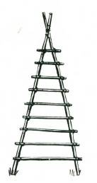
A bush ladder is easily made. Select two long, straight poles cut to equal length. Lash the thin ends together. Spread the butts or thick ends so that they are about two and a half to three feet apart.
To these lash the rungs, and make certain that the lashings are good and tight. Lashing the rungs is made easier if you lift the butts on to a log or a couple of big stones. This will allow you to pass the lashing material more easily under the poles.
S INGLE ROPE LADDER

Cut as many hardwood chocks, 1½ to 2 inches thick, as you require for your ladder. These are placed every fifteen to eighteen inches apart. The chocks should be about four inches across and can be cut from either square or round timber. Bore a hole through the centre of each chock. This hole should not be more than one-eighth inch larger than the diameter of the rope.
Thread the rope through the holes in the chocks and then, starting at one end, open the strand of the rope and slip in a half-inch thick hardwood peg about three inches long. Bind the rope below the peg. Slide the chock down, and measure off the distance to the next step. If desired, bind above the chock to
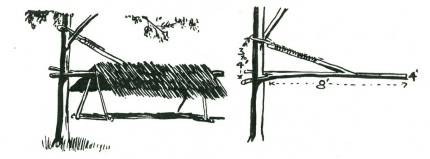
prevent the feet pulling it up when climbing.
If using braided cotton rope omit
S WINGING S HELTER
A forked pole, at least four to five inches thick, and eight feet long, with a side branch coming off at right angles to the fork and four to five feet below it, is required. To the side branch a rope or very strong vine loop is secured, passed around a tree trunk, and then bound very securely back on to the side branch. The long arm of the pole should be horizontal and six to seven feet above the ground.
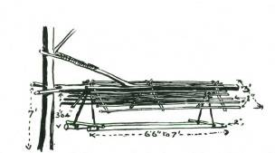
To make the shelter top, lash three 3-ft. stakes, each about 2 inches thick, to each side of the pole. They should slope down at an angle of about forty-five degrees, and can be held outwards by lashing braces across.
Lengthways to these poles lash thatching battens, each about 1 inch thick and eight feet long. These should be six inches apart.
They are then thatched with grass, fern palms or reeds. (Branches and tree leaves are useless.)
The bed is suspended from the centre pole by ropes or vines to the two long sides, which are held apart by lashing two crossbars at head and foot. The bed is then made up like the camp bed.
This shelter can be swung round the tree trunk to take advantage of sun or shade or get better protection from the weather.

S LUS H LAMP
A lamp for your camp is made by filling an old tin or small hollow piece of branch with clayey earth, packed tight at the bottom. The earth should come to about an inch from the top of the tin. Into this a twig is pushed and a piece of old cotton rag, or very finely teased bark fibre, is wound round the twig to serve as a wick. Fat from your cooking is poured on top of the earth, and when the wick is lit the lamp burns with a clear flame. The amount of light can be controlled by the size of wick.

A CANDLE HOLDER FROM A BOTTLE
An open flame in a tent is dangerous, and a candle holder or glass cover for a slush lamp can be made by cutting off the base of a clear glass bottle. A very easy way to cut the glass cleanly is to heat a piece of thin wire to red heat. Bend this around the bottle where you want to cut it (alternatively, tie a piece of grease-soaked string round the bottle and burn it), and then, when the hot wire or burning string is around the bottle, immerse the bottle in cold water. The glass will break off evenly at the place where the wire or string encircled it.
NOGGIN
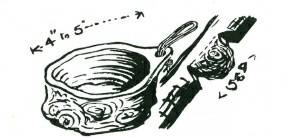
On many trees you will see lumpy growths or “burls”, varying in size from a few inches to a foot or more. These are covered completely over with bark, and if you examine one closely you will find that under the bark the wood is all solid, and the growth is complete, without any holes where branches might have once grown.
Cut off the lump by making a scarf an inch or so above and another below the growth. A side-cut with your axe will then slice the wood with the burl completely free. Roughly trim the surplus wood, and with a gouge clean out the wood from the centre of the burl. This is very easy, because the grain follows the curves of the growth. Leave a handle in the form of a lip, and if you so wish, bore a hole through this handle and put a leather loop through the hole. A coconut shell makes an excellent noggin.
CLOTHES PEGS

Clothes pegs are quickly made by taking a number of half-green sticks, about seven inches long, and splitting them, first binding the end so that they will not split right along their length. A better way is to use a forked stick, hooking the hook part on to a branch.
CAMP BROOM
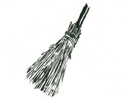
A bundle of green straight sticks, each not much thicker than a matchstick, is collected and bound tightly to a central handle. The business end of the broom is then trimmed off.
BUS H HOE
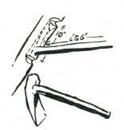
Select a dead or half-dead branch of hardwood, four to six inches thick, with a side branch from five to six feet long and an inch and a half thick coming off it at a fairly wide angle. Trim the side branch so that it is smooth. With your machete or tomahawk, trim the main branch so that it is a “hook” to the handle part. See that it is sharpened to a chisel edge. This bush hoe is quite an efficient digging tool, particularly if the digging end is fire hardened.
BUS H S LED
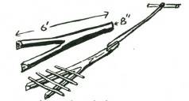
There are occasions when it is necessary to move a heavy load, and for this purpose a bush sled can be easily made from a forked branch of a tree. The branch is cut with the prongs of the fork a couple of feet behind the end of the main branch. A rope or other means of towing the sled is fastened on to this main part of the branch, and across the forks a few straight sticks are laid, and the load placed on top of these.
CAMP LARDER

A camp larder is simply a platform, roofed over with thatch and with the sides thatched so that it is dark and cool inside.
Darkness will help to keep flies away, and coolness will help to prevent food going bad. An excellent improvement to a camp larder is a water tin suspended above the thatch, with a few pieces of cotton rag to siphon water on to a thatched roof. This is almost a camp refrigerator. The temperature inside such a larder, if built in a shady position and with a good breeze, will be easily twenty to forty degrees below the shade temperature outside.
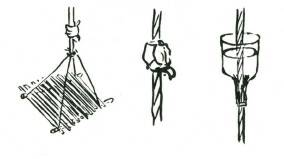
Other methods of storing food in camp away from animals include placing it in a hollow log wedged in the crotch of a tree, or suspending it from a bough, or making a platform and suspending this from a branch in a shady position. If ants are a pest, suspending the platform is probably one of the best ways to keep them away from your food. If they do find the cord, you can prevent them from travelling along to your food by tying a kerosene-soaked rag around the cord. Another method is to break a bottle off above the neck, pass the cord through the cork, and then, after packing clay around the rope where it passes the neck, fill with water. Water will soak down the rope and the bottle will need frequent filling.
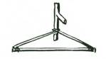

Usually in camp, one’s travelling clothes become crushed and soiled. This can easily be prevented by making a simple coat and trousers hanger. If you take off your good clothes immediately you arrive in camp and put them on this coat-hanger, they will remain fresh and uncreased.
This “Adirondack” pack is a good method of carrying gear in camp. The cross sticks are tightly lashed to the two hooked sticks.
Shoulder straps are plaited from reeds or made from wide strips of soft bark.
CAMP S UN CLOCK

Select a patch of bare earth near your camp. It must be level, and open to the sun all day. Stick a peg in the centre of this patch, and with a length of cord as a loop around the peg, scratch a circle on the ground. This must be at least five feet across. From the peg, which is now the centre of the circle, carefully draw a line TRUE north. This must be accurately TRUE, and not M agnetic. Extend this line to cut the southern side of the circle, and then draw in accurate East-West lines crossing at the circle’s centre.
Divide the circumference of the circle into twenty-four equal divisions. Each of these divisions will be fifteen degrees.
Now have a look at your map and find out what degree of latitude you are in. M easure this in degrees on the out side circle, working from where it is cutting the East-West line. Put a small peg on each side of the circle’s edge to mark the latitude degrees.
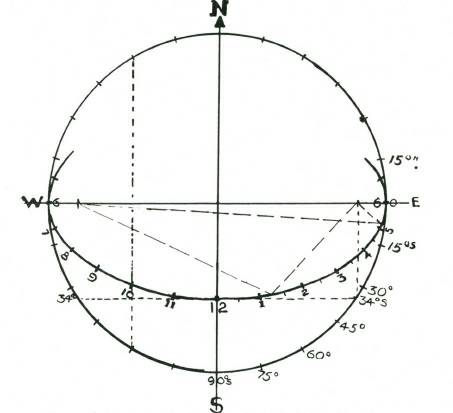
Be careful to note whether your latitude is North or South of the Equator. Stretch the cord over the two pegs and mark where it crosses the North-South line. Now put a peg on the North-South line where the cord crosses it. Next, put two other pegs at either end of the East-West line so that the “degree” pegs on the circle are at right angles. Tie a cord to each of these pegs, and have the cord pass round the peg on the North-South line. Lift the cord over the centre peg, and with the point of your knife, scratch an elipse on the ground, so that it touches the circle where the East-West line crosses, and also touches the point on the North-South line where the peg is.
Connect up the fifteen degree marks on the circle by means of the cord and parallel with the North-South line. Where the cord crosses the ellipse, put a small peg very firmly into the ground.
There will be thirteen of these pegs, and they will follow the curve of the ellipse. These are the hour pegs, starting from 6 a.m.
on the left, where the West line cuts the circle, 12 noon on the
North-South line, and 6 p.m. on the right where the East line cuts the circle.
You must now know how to find where to place the shadow stick. This depends on the sun’s position North or South of the
Equator.

TO FIND THE S UN’S POS ITION NORTH OR S OUTH OF THE EQUATOR
Draw another circle inside the big circle using the same centre.
The radius of this circle must be equal to 23½ degrees of the big circle. Divide this circle into twelve equal divisions and mark June at the North side; July, etc., follow clockwise. Divide June into four equal divisions, and do the same with December (at the South end). Offset ALL divisions one-fourth in a clockwise direction.
The North-South line will now pass through the third division of
June and December. Put pegs in for each of the twelve months’
divisions.
To find the sun’s position at any time of the year, draw a line from the month, and approximate day thereof, to the North-South line. This must parallel the East-West line. Where this line cuts the
North-South line is where you place your shadow stick.
To get absolutely reliable time from the sun, two corrections for longitude, and for the “equation of time” are required.
The “shadow” reading, with these corrections, will be right to two minutes, if your North-South line has been accurate.
If West of the M eridian of Standard Time, add four minutes to sun clock time for each degree. East, deduct four minutes for each degree.
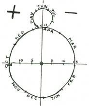
Draw a figure 8 near the sun clock on the ground, with the top half of the 8 just less than one-third the bottom half. Divide a line across the bottom half into three equal divisions on each side of a centre line.
Each of these divisions represents five minutes of time.
Now mark off the figure 8 into approximate divisions like the sketch. Put pegs in the ground to mark these divisions, and also the five minute divisions on the cross line.
Put a MINUS sign on the right-hand corner, and a plus on the right.
MINUS means that the sun time is behind clock time, and so you must
ADD. Plus means that the sun time is ahead of clock time.
CHAPTER 4
FOOD AND WATER
M any people associate survival with the ability to find food and water. These of course are essential to sustain life.
In all areas, except the most arid, food and water in sufficient quantities are available, but the fear in many people’s minds is that the food they find may be poisonous, or the water polluted.
This book establishes safe principles for recognising foods which are edible and safe, and ways to overcome possible contamination of water, no matter how badly it may appear polluted.
The search for, and recognition of edible foods sharpens and develops three of man’s senses, sight, taste and smell. On the use of these depends the searcher’s success in finding food and water.
Associated with the finding of natural foodstuffs which are edible and safe, is the preparation of these.
Bearing in mind that the person concerned with survival may have no equipment except a knife or machete, the cooking of food and boiling of water may be no less important than the actual finding of these. It is for this reason that these subjects are included in this book.
Food and water are essential to living. Under normal conditions a person cannot live longer than three days without water, but one can live ten days or longer without food.
Food, apart from its vitamins, mineral salts and other minute elements, must contain Proteins and Carbohydrates. Proteins are the flesh builders. Carbohydrates are the energy makers–the fuels for your body’s furnace.
Every action calls for work from some of your body’s cells, and, although new cells are continually being made in your body tissue, old cells are dying. These body tissue cells require replacing, and it is the digestible protein in your food which is used to build these cells.
PROTEINS are supplied by such foods as meat, cheese, nuts, beans and peas.
CARBOHYDRATES are supplied from the starchy foods such as bread, sugar, potatoes, and roots and tubers, and green vegetables and sweets generally, including honey.
For every action you burn up fuel. The more vigorous your actions the more fuel you require, and the faster your body burns it. This fuel is supplied from the carbohydrates in your food. Your body can no more run without this fuel than can the engine of a car if the petrol tank is empty. Your body stores up in its cells reserves of sugars, so that even if you have no food for your stomach, you can draw on these reserves and keep going for a short period.
Your body also needs other foods such as salt and special minerals and vitamins, but in a natural diet most of these essential specialities are contained in the fruits and meats and vegetables which you would eat.
It is possible to have a full stomach at every meal and at the same time to starve to the point of death. If you tried to live entirely on proteins, you might starve for carbohydrates, and, correspondingly, you could be full of carbohydrates but starved for proteins. There should be a balanced proportion of proteins to carbohydrates, and the proportion is, roughly, one part of protein to six parts of carbohydrates.
Another absolute daily essential is salt. Without sufficient salt there can be serious physical consequences. In tropical areas where there is great loss of body salt through excessive perspiration, it is essential to eat salt, and maintain the salt content of the blood at a safe level.
*
General rules covering the edible qualities of foods are set out in the succeeding sections. If there is doubt, take no risk. Eat a small quantity of the suspected food, and await results. If there are no ill-effects the food is probably safe.
*
ALL FLES H IS EDIBLE
Nearly all flesh, if freshly killed, is safe to eat. The flesh of all mammals, all reptiles and all birds is free from any poisonous contents and safe. But NOT the flesh of all fish.
By “poisonous” is meant actually toxic, that is, containing a poison. An exception in the reptile world is the Hawksbill turtle, which, in the thorax, contains a sac which more learned authorities class as toxic or poisonous.
PARAS ITE INFES TATIONS
The words “safe to eat” do not mean that the flesh may be eaten with no ill-consequences. It merely means that the flesh itself contains nothing which will be poisonous to adult human beings.
M any animals are hosts to parasites which can be fatal to man if they are introduced into his body. For instance, the flesh of the rabbit may be infested with hydatids, a worm which, if it finds entry into a human, can often prove fatal. The ancient Jewish law which declared the pig unclean was undoubtedly based on the observation that eaters of pig meat showed a higher death rate than eaters of other meats. Pigs are commonly infested with parasites which can also make man their host. Hence the law forbidding the eating of pig flesh.
In common with the pig and the rabbit there is always the chance that the flesh of almost any animal (particularly animals which graze close to the earth, or which burrow or which frequent fresh water streams) may be infested with parasites dangerous to man, and consequently no flesh is absolutely safe to eat raw, even in emergency. However, the parasites and their eggs are destroyed by heat, and therefore all flesh should be thoroughly cooked before eating.
This particularly applies to all fresh water fish and fresh water shellfish.
BACTERIAL DECAY
Putrefaction and decay are caused by bacterial action. Food is protected commercially by freezing, by salting or pickling, by heating and vacuum sealing, and by many other means. None of these methods which call for equipment are practical in the bush, therefore other methods must be found to preserve meat safely for indefinite periods.
M eat goes bad because of bacterial infection. Bad meat can be fatally poisonous if eaten. When the term “safe to eat” is used it only applies to freshly-killed and fresh meat.
PRES ERVING MEAT FOR LONG PERIODS
The preservation of meat for long periods can be done by smoking and sun-drying, by salting and pickling and, for short periods, by cooking in fat. If climate permits, meat can also be preserved indefinitely by freezing.

S UN-DRYING (BILTONG)
The meat to be smoked or sun-dried must be freshly killed. Cut off the fatty portions, and then slice the meat into strips no thicker than half an inch and no wider than one inch. These strips are threaded on to a wire or cane, so that no piece of meat touches another.
There must be free circulation of air round each separate piece.
Hang the canes or wires with the strips of meat above the thin blue smoke of a wood fire until the outer surface is quite dry. This may take from an hour to a day. Do not allow the meat to hang too close to the fire, or in the flame. Smoke alone is sufficient. If the meat is to be sun-dried, the only reason for hanging in the smoke is to protect the moist meat from blowflies while the outer surface is drying.
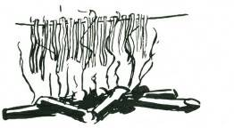
It is also important not to try and build a “smoky” fire by piling on green leaves or wet rubbish. If you do the moisture and essential oils evaporated from the leaves will condense on the strips of meat and make it uneatable.
M any an enthusiastic but inexperienced meat drier has ruined his meat by making a fire of green leaves, and then wondered why the meat was saturated with oil from the leaves.

Blowflies will not lay their eggs, or their larvae, on a dry surface. When the surface is quite dry, take it from the fire and hang it in the sun to complete the drying process.
A single day in a dry atmosphere will complete the drying-out.
When carrying dried meat, pack it in a bag of open weave. Do not wrap or pack in cellophane or plastic, otherwise the meat will
“sweat” and mildew.
Sun-dried or smoked meat will keep indefinitely and retain its original nutritive food value. You can cook it in a stew, use it for broth, or eat it raw. If well smoked, it is very palatable eaten raw.
When using for a stew, it is advisable to soak for an hour or two.
PEMMICAN
This is simply sun-dried meat powdered. It may be mixed with

fat in cool climates. Pemmican will keep very well, and can be eaten raw, or soaked and made into hamburgers or stews.
DRYING AND WEIGHT
These simple methods of preserving flesh effect a considerable reduction in weight, simply because the excess moisture has been removed.
This is important to the traveller who goes through the bush on foot. About six ounces of dried fish or meat is equivalent to one pound of fresh meat. There is also a corresponding reduction in volume.
DRIED FIS H (Edible Fish)
The fillets of fish which it is known are safe to eat may be sundried in a similar manner to meat. With fish it is essential to dry quickly, and, if the day is not hot and dry, then smoke thoroughly over the fire. If the flesh is flaky and cannot be cut into strips, heat flat smooth stones and lay the slices of flesh on these, and place in the sun to dry out thoroughly. Turn the slices frequently. Fish meat is easily powdered into fish pemmican, and can be cooked either by making into fish cakes, or by soaking, if in strips, and then frying in batter.
By keeping the fish strips in the smoke continuously until they are completely dry, you have smoked fish, and very nice too! The best smoke for this is a thin blue smoke, and definitely not a heavy white smoke.
PICKLING
The meat is cut into small joints or pieces of about half a pound each, and put in a strong solution of salt and water (brine).
Pickled meat will keep indefinitely in the brine.
COOKING IN FAT
M eat can be preserved up to five or six days in summer by preliminary cooking in fat, and then allowing the meat to remain in the fat in which it was cooked. The heat of cooking sterilises the meat, and the fat seals the meat safely away from bacterial infection. This method is convenient when meat requires to be kept for a short period.
FAT
When sun-drying meat, it is necessary to remove the fatty portions before drying, otherwise the fat will go rancid and taint the dried meat, making it uneatable. The fat should not be thrown away. Fat is food, and the fat cut off the meat should be rendered down and kept, if possible, as dripping for future use.
FREEZING
Freezing as a means of preserving meat is not practical unless in a climate where the temperature can be relied upon to remain below 29 to 30 degrees. Freezing alone is an excellent way to keep meat and is often used during winter ski-ing trips.
PRELIMINARY COOKING
M eat which has been either boiled or baked has in the boiling or baking been made sterile, that is, the bacteria which cause putrefaction have been destroyed, and therefore the meat will remain safe to eat for a short time. Re-cooking will effect further sterilisation and prolong the period during which the meat can be eaten. The time between cooking and the meat being unsafe to eat depends largely upon the weather; hot humid conditions will make the meat unsafe more rapidly than cool dry conditions.
The presence of blowfly grubs or maggots on meat does not mean that the meat is tainted and unsafe. These maggots do not indicate poisonous properties of decay in the meat. Their presence merely indicates the visit of the female fly, which, seeing suitable conditions for her eggs or larvae, has placed them there where they may have food. M eat which has been blown can be washed and

eaten with perfect safety. Admittedly the maggots are repulsive, but they are in themselves quite free from actual poison. The blowfly is no guide to the condition of meat. It will blow any meat, putrefied and poisonous or safe.
EDIBLE -BUT NOT PALATABLE
To say that meat is safe to eat does not mean that it is palatable. The flesh from a shag or diver (cormorant) is edible, but so strongly “fishy” and “oily” that it is most unpalatable.
Nevertheless, in emergency it can provide the proteins necessary to sustain life, and this flesh is wholly digestible.
The flesh of a cat, dog or rat is edible, and if you did not know the origin of the meat prior to its being cooked, you would eat it without repugnance. Cat tastes almost exactly like hare. Flying fox, roasted, is as succulent as sucking pig; and snake, roasted in the ashes, has a white meat of delicate flavour. But you would not say they were palatable, simply because the source of the meat to your mind would be repulsive.

The rule is that the flesh of all birds, mammals and reptiles is safe to eat, but not all are palatable.
ALL WATER CREATURES
The flesh of some sea creatures is dangerous to eat because the flesh contains actual toxins poisonous to your digestive system.
S ALTWATER FIS H
Provided the fish have the usual appearance of fish, and have scales and the conventional shape of a fish, you can say that it is safe to eat and has no poisons in the flesh.
If the creature does not have the usual “fish shape,” and does not have scales, then regard it as poisonous, unless you know for certain that it is safe. An example is the shark, which has no scales.
The flesh of the shark is safe to eat, but beware of the “innards.”
Shark liver has such a high concentration of vitamin D that a feed of shark liver, fried, might be fatal. The eel, which does not have the conventional shape of a fish, nevertheless has minute scales (or so I read somewhere), and the flesh is safe to eat. Properly cooked, it is most palatable, though somewhat rich in flavour.
The puffer or toady, the box fish, the pig fish and the leatherjacket do not have the conventional fish shape, nor do they all have the scales of a fish, and are all poisonous, except the leatherjacket, and I should be doubtful about eating the roe (eggs)
or liver.
Colour of the flesh is no indication of the presence of poison in the flesh. M any of the parrot fish, having the fish shape and scales, have green flesh, yet all are edible and very palatable. It is interesting to note that many ancient mariners, including Captains
Cook and Bligh, report that their men “caught a mess of brilliant fish from the sea, and after cooking same were violently ill, being taken with great pains, and they fell a-vomiting, being purged with the poison of the fish they had eaten.”
It has since been noted by many observers that putrefaction of the flesh of many tropical fish sets in a few minutes after the fish has died. Consequently, the poisonous property attributed to the flesh is in reality due to the fish having gone bad in a few minutes.
(The author has identified many of these tropical fish once thought to be poisonous; cooked immediately they have been caught, they have been eaten with no ill-effects. At the same time, some of the same catch were kept uncooked; in half an hour they were bad.)
You should reject for food any fish which lacks scales or which is of unusual shape, unless you know for
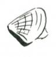
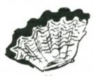
certain it is safe to eat. ('S afe’ includes eels, sharks, and rays, the flesh of all of which is edible, but do not under any consideration eat the 'innards’.)
S HELLFIS H
All bivalves are free from toxic poisons, except for a reputed poison in the saltwater mussel at certain periods of the year, and the flesh of all is safe to eat, unless taken from contaminated waters.
Pippie

Clam
Cockle
This particularly applies to freshwater shellfish, which are likely to be hosts for parasite infestations which can be harmful to man.
Those taken from freshwater should be well cooked to destroy any possible parasites and their eggs, also the source of the fresh water stream should be known to be reasonably free from sewage contamination.
When the flesh is tough, it can often be made tender enough for eating by beating.
Cooking can be either by boiling, grilling or baking.
BIVALVES
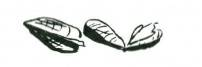
Bivalves are found all along the coastal sea beaches. They make an excellent meal. A dozen to eighteen bivalves are a good feed for one person. To cook, put the bivalves in a billy and pour boiling water on them. The bivalves will open, and the fish itself can be easily removed from the two shells. The fish must be washed several times in water to remove all sand, and then boiled in fresh water, add milk and thickening after boiling (or water and dried milk if desired) for ten minutes. Before cooking, the flesh may be cut into small pieces. After ten minutes’ boiling, add thickening and salt to taste. Pippie soup is identical with the famous New Zealand
Toheroa soup, only it doesn’t cost so much and you get more toheroa!
OYS TERS
Oysters, of course, are eaten raw, or they may be cooked and served as soup. Oysters are edible and safe all the year round.
CLAMS

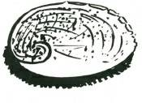
Clams and most of the other bivalves must be cooked. The big clams of the Barrier Reef are all edible and there are records of captains of ships, long forgotten, sending men ashore to the Reef to collect clams, and detailed accounts of the cooking of them.
Practically all these accounts state the clams were boiled before eating.
CONICAL AND S PIRAL S HELLFIS H
Abelone


Whelk
Conus
The flesh of all the conical and spiral shellfish is edible and free from toxic poisons, with one exception, and many are very palatable.
The exception is one family of spiral cone-topped shellfish, the

“Conus” family. M any of these have a poison dart or tongue which can inflict a very painful wound (one known fatality was at
Hayman Island in 1935). These poisonous “conus” family of shellfish are not usually found out of tropical waters. They can be identified by the spirally-shaped conical top of the shell.
ABELONE
Particularly recommended for food are Abelone (Haliotis).
These are a flat spiral up to five or six inches in length and four to five inches across, by about an inch and a half high.
These are invariably found below low tide level and like a position on rock among kelp and long seaweeds. They have some mobility and move sluggishly around the rock. They can be found by feeling gently among the weeds. They feel like a roundish part of the rock and, if taken suddenly, can be pulled free. However, if given a chance to clasp the rock with their myriads of suction cup
“feet” they cannot be pulled free with the hand, and a knife must be inserted under the shellfish to lever it loose.
Shell
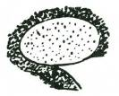
Meat (remove shaded portion)
To cook abelone, remove the shellfish from the shell, cutting the muscle at the top of the shell. Remove the intestines, and with a sharp knife trim off the ridge with the suckers, scrape off the blackish lining, and the base of the fish where it is rough from the rock face.
Beat the remaining portion heavily, and then toast on both sides till brown. Eat with salt to taste. Two are an adequate meal for one person.
The flavour is rather sweet, like lobster meat, only very much richer.
Another method of cooking is to cut into small half-inch squares after beating and allow to stand for about half an hour. The abelone “bleeds” with a bluish juice. Boil in this juice for five minutes, add milk and thickening and salt to taste, and boil for a further five minutes. M ay be eaten hot on bread or toast, or served cold as a savoury. The flavour either way is excellent.
Native people cooked abelone by dashing the fish down sharply on its back immediately it is taken from the water and then

tossing the shell and fish on to a fire of hot coals and baking in the shell.
WHELKS
These large shellfish measure up to five or six inches in length and are found in rock pools among kelp and seaweed. The flesh itself is too tough to eat even when beaten. Break the shells open with a rock and remove the shellfish entire. Put these in water and boil for ten minutes and then strain off the liquid into another billy and add milk, thickening and salt to taste. The result is a really delicious soup. The flavour is identical with crab, very rich, and most palatable.
CRUS TACEANS
All the crustaceans are safe to eat and free from toxic poisons, but freshwater crayfish and yabbies are subject to parasite infestations which may be harmful to man, and therefore the flesh should be extremely well cooked as a safety measure.

Crustaceans are usually boiled, but it is quite practical to simply kill the creature and wrap the shellfish in either an old wet newspaper, a ball of clay or large green leaves, such as banana leaves or palm leaves. The wrapped shellfish is then placed deep in the hot ashes of a fire. Be sure you place it in the ashes, and not the surface coals. Cover the bundle completely and leave for six to twelve hours. The food will not have burnt or dried out, but will be cooked deliciously.
This is an excellent means of cooking all meats. Freshly-killed wild duck, pigeons and all fresh meat is tough. If cooked in the ashes for ten to twelve hours the meat, however, will be tender. The meat cannot burn because the temperature of the ashes is slowly reducing all the time. This is an excellent way to cook large fish in camp.
OTOPODS AND GAS TROPODS
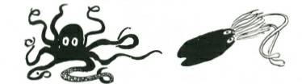
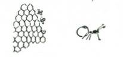
The flesh on the tentacles of all the octopods and gastropods
(octopus and cuttlefish, etc.) is edible, but many are extremely tough and rubbery. The flesh of octopus tastes exactly like lobster.
To cook, beat the octopus tentacles and boil in very hot oil, 10-15 minutes. It is probable that there are other ways of preparing these for food, because they are a favourite delicacy among
M editerranean peoples. Caution: one small species of ringed octopus–4” to 6” long–has been known to give fatal stings.
INS ECTS
Some of the insects are a valuable source of food. Consider the bee and the food value of its honey.
Honey is so rapidly assimilated by the body that, if given by any means to a person unconscious from exhaustion, it will be
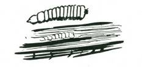